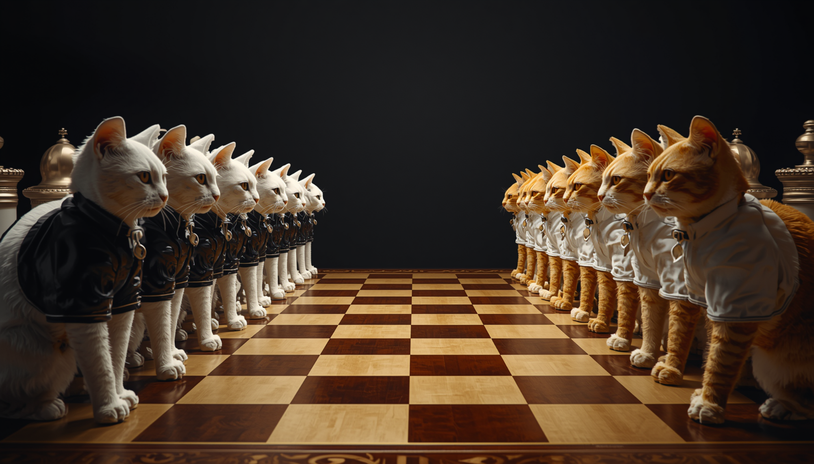

Oyun
Kütüphanesi
Kütüphanesi


Kişisel Hobi Projesi
Mistik Oyunlar Launcher
🚀 Yazılım Detayları
Beltek eğitim sürecinde, Python ile kurguladığım oyun mekaniklerini web platformuna taşıdım. HTML5 ve JavaScript teknolojileriyle tarayıcıda doğrudan çalışabilir bir yapı kurdum.
Algoritma Dönüşümü:
Python'da geliştirdiğim oyun mantığının, JavaScript'in event-driven (olay odaklı) mimarisine entegrasyonu sağlandı.
Web Render Süreçleri:
Oyun görselleri ve oyun döngüsü (game loop), HTML5 Canvas API kullanılarak tarayıcı üzerinde optimize edildi.